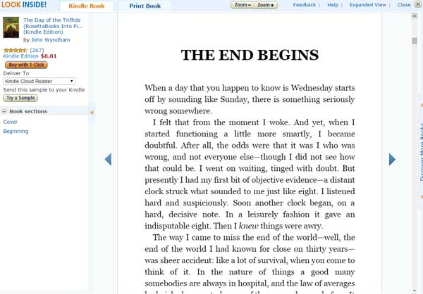

How to Improve your English by Reading Books/Novels
Reading fictional books (also called novels) is one of the best and cheapest ways to improve your English.
With my own students, I notice the difference in class between those that regularly read novels in English and those that don't. Those that regularly read, improve their English faster and get better exam results.
The big problem is knowing which books to read. But before I advise you how to select the right books for your level, let's look at why reading in English will improve your level.
Why reading novels helps your English
Although reading in English will help you to learn new vocabulary and expressions, it will also help you to remember vocabulary and grammatical structures that you have already learnt. Like with learning to play the guitar, the best way to improve your English is through practice and repetition.
Reading books in English also helps you to practise using the context of a sentence to guess the meaning of words and expressions that you don't know. Using context to guess meaning is fundamental for both mastering English and remembering new vocabulary.
To know how to use context to improve your English, read my article on 'how to improve your English'.
Choosing a book
As I said before, the big problem is choosing the right book for you. It needs to be just hard enough that you learn new vocabulary, but not too hard. If you choose a book which is too hard or complex for your English level, you'll become confused, frustrated and stop reading the book.
How to know if a book is right for you
The only way to know if a novel in English is right for you, is to read the first few pages of the book. If you don't know the meaning of more than five words/phrases on each page, then you know that the book is too difficult for you.
If you know every word or expression you have read on the first few pages of the book, then the book will be too easy for you (you are not going to be learning any new vocabulary).
A novel will be right for you, if on the first few pages you understand the situation (where they are, why they are there, what they are doing etc...), but don't know the meaning of between two to five words or expressions per page.
Read the first few pages before you buy
To save you money, you should always read the first few pages of any book/novel you want to read in English before you buy it.
Although you can go to a book shop/store to do this, the easiest way you can do this is to look at a book you are thinking of reading/buying at amazon.com. For most books, the website gives a free preview/sample of the first few pages.
If there is a preview/sample of the book, you'll see 'Look inside' written above the photo of the book.

To read the first few pages of the book/novel, click on the photo of the book and then go to chapter one.

If the book has a kindle version, click on the tab for that (it is better to read the words from).
Novels for people learning English
In addition to reading books written for native speakers of English, you can also read books that have been written or adapted for people learning English too. These books are called 'readers' and you can choose a book specially for your level of English (e.g. beginner, intermediate etc...).
Unfortunately, there is no 'look inside' option for these types of books/novels on amazon.com. So you either have to find one in a book shop/store and read the first few pages there, or buy it online without looking at the first few pages.
Read articles in English as well
In addition to reading novels, you should also read online articles and news stories (on the BBC). The advantage of doing this is that they are shorter than novels and you can learn vocabulary on a variety of different topics.
This is particularly useful for people who are studying to do an exam in English (e.g. Cambridge FCE, CAE, IELTS etc...), where students need to improve their English vocabulary and knowledge of lots of different topics/subjects to do well in the exam.
The problem is that it can be difficult to find an online article that is right for your level.
If you prefer to read articles instead of novels or are studying for an English exam, we have created some eBooks to help people with an intermediate or upper-intermediate level of English improve their reading ability and vocabulary. To learn more about them click here and then select your level of English on the next page.
Follow us on  or on Twitter
or on Twitter 
©2024, Blair English